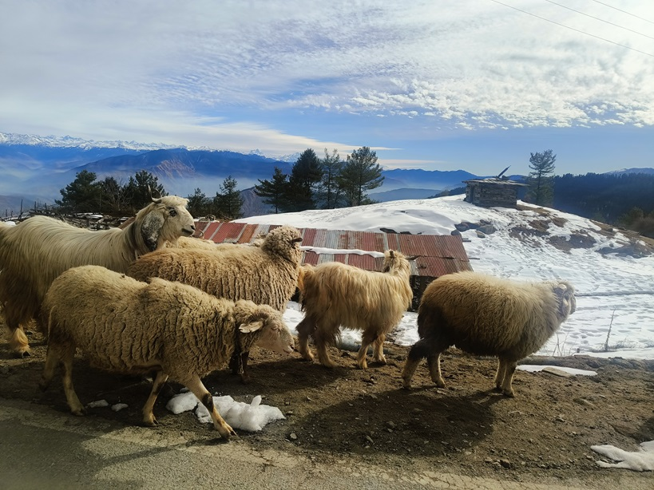
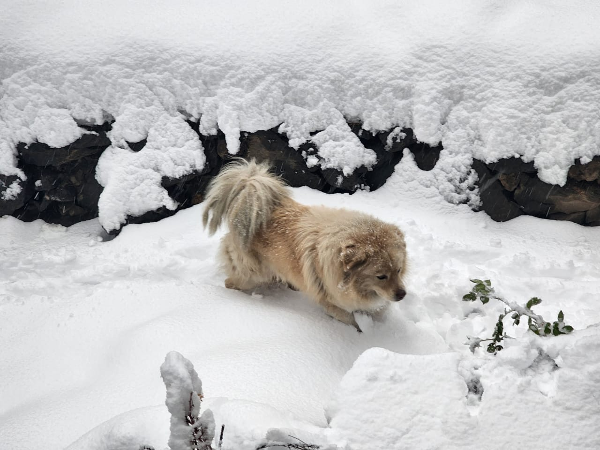
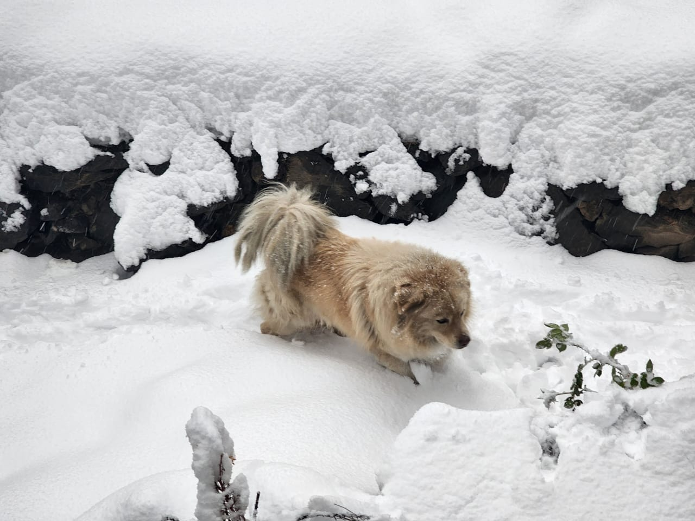
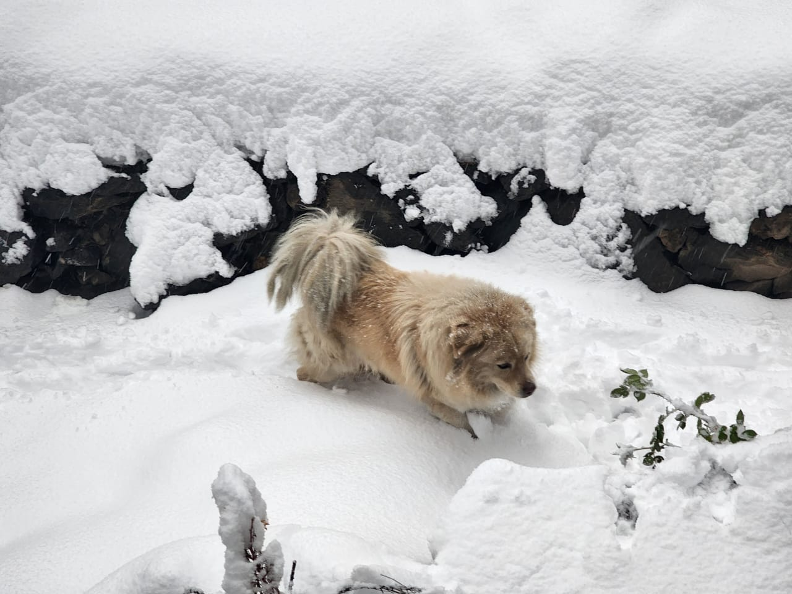
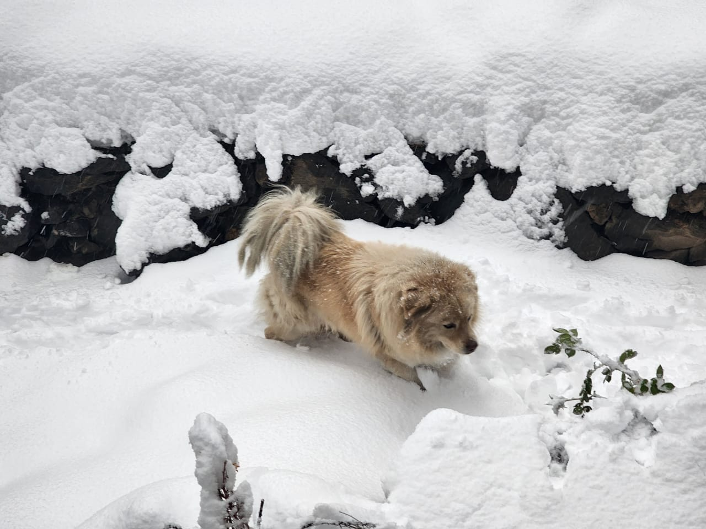

Gallery

 


Explore the beauty of Himachal on snowshoes!
The Snowshoe Association, Himachal Pradesh is dedicated to promoting snowshoeing as a sustainable and thrilling winter activity. Snowshoeing is an exhilarating winter sport that combines fitness, exploration, and a deep connection with nature. Originating as a practical means of traversing snow-covered terrains, it has evolved into a popular recreational activity. Snowshoeing involves walking or hiking in snowy landscapes using specialized footwear—snowshoes—that distribute body weight evenly, preventing the wearer from sinking into the snow.
The sport is particularly accessible, requiring minimal training and equipment, making it suitable for individuals of all fitness levels. Participants can enjoy snowshoeing on groomed trails, backcountry routes, or untouched snowy expanses. It’s also an excellent cardiovascular workout, burning calories and building endurance while allowing enthusiasts to immerse themselves in serene, snowy environments.
In Himachal Pradesh, snowshoeing is gaining popularity, with trails in Shimla, Kullu, Kinnaur, and Lahaul-Spiti offering breathtaking views of the Himalayas. Events such as snowshoe races and guided treks are becoming common, encouraging locals and tourists to embrace this sustainable and low-impact winter sport.
Learn more about snowshoeing on Snowshoe Sport and explore Himachal Pradesh on Himachal Pradesh Tourism.

Email: snowshoeassochp@gmail.com
Headquarters: Shimla, Himachal Pradesh